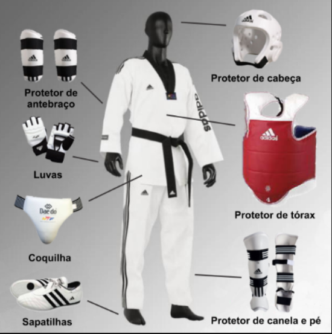

Taekwondo
O Taekwondo, Tae Kwon Do ou Taekwon-Do
é uma arte marcial
coreana que desde 1988
passou a ser um esporte olímpico.
A palavra “Taekwondo” é formado por três
termos: Tae (lutar com os pés), Kwon (lutar
com as mãos) e Do (caminho espiritual).
Dessa forma, essa arte marcial significa
“caminho dos pés e mãos
através da mente”,
sendo uma prática que exige disciplina e
autocontrole dos participantes.
Desde 2006, o Dia mundial do Taekwondo
é comemorado em 4 de setembro.
Equipamentos utilizados em competição:
